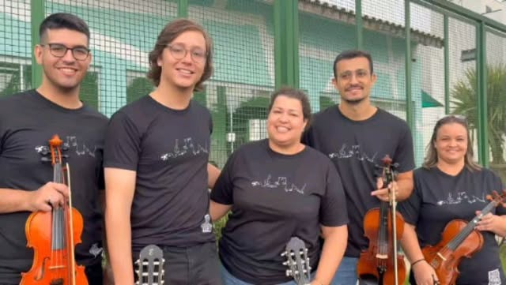

Anos 2000
O Projeto Brincarte articula escola, educadores e moradores da Vila Gammon em torno de atividades artísticas.
Uma história construída por educadores, artistas e moradores que fizeram da arte uma ferramenta de encontro, aprendizagem e transformação social.
O Salão Cultural nasceu das experiências do Projeto Brincarte na Vila Gammon. Com o envolvimento da comunidade, cresceu, ganhou reconhecimento e consolidou uma programação gratuita de formação artística.
O espaço é mantido pela Associação Popular dos Moradores das Vilas Gammon e Francisco Roberto, entidade comunitária sem fins lucrativos.
Ao longo dos anos, o Salão Cultural cresceu junto da comunidade, ampliando suas ações, parcerias e impacto cultural.
O Projeto Brincarte articula escola, educadores e moradores da Vila Gammon em torno de atividades artísticas.
O trabalho se consolida como Ponto de Cultura em 2011 e recebe a primeira certificação Cultura Viva em 2014.
Artistas formados pelo projeto criam novas ações e passam a assumir atividades junto à comunidade.
Novos recursos apoiam melhorias na estrutura, acessibilidade e fortalecimento da sede.
Chegam novas parcerias, ações audiovisuais e projetos que ampliam as linguagens trabalhadas.
O Ponto fortalece oficinas, encontros e políticas Cultura Viva, ampliando o alcance das atividades.
Missão e visão lado a lado; os valores ganham o espaço que precisam para serem lidos com clareza.
Oferecer formação artística gratuita e fazer da cultura um caminho de educação, expressão, inclusão, cidadania e fortalecimento dos vínculos comunitários.
Ampliar o acesso, fortalecer artistas, preservar a memória local e criar oportunidades de formação em Paraguaçu Paulista e na região.
Gestão comunitária, educadores, artistas e voluntários trabalhando em rede.

Professor, gestor cultural, autor, editor, escritor e articulador cultural. Atua na gestão do Ponto de Cultura, na articulação institucional e na elaboração e execução de projetos.
Vice-presidente
1ª tesoureira
2º tesoureiro
1º secretário
2º secretário
Diretor de patrimônio